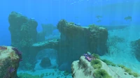
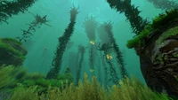
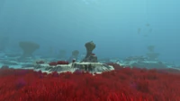
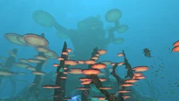
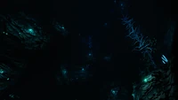
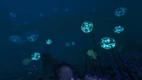

Surface
| Biome | Profondeurs | Gangues de minerai |
|---|---|---|
|  Bancs calmes |
0 - 80 mètres | Affleurements de Calcaire Affleurements de Grès |
|  Forêts d'algues |
0 - 160 mètres | Affleurements de Calcaire Affleurements de Grès |
|  Plateaux herbeux |
50 - 170 mètres | Affleurements de Calcaire Affleurements de Grès |
|  Forêts des Arbres Champignons |
75 - 250 mètres (Nord-Ouest) 125 - 200 mètres (Nord-Est) |
Affleurements de Calcaire Pommes de pin violettes Affleurements de Grès Affleurements de Schiste |
|  Forêts des Algues sanguines |
150 - 675 mètres (Tranchée) 200 - 580 mètres (Nord) |
Affleurements de Schiste |
|  Grand Récif |
150 - 480 mètres | Affleurements de Schiste |
Zone morte |
0 - 3000 mètres | - |